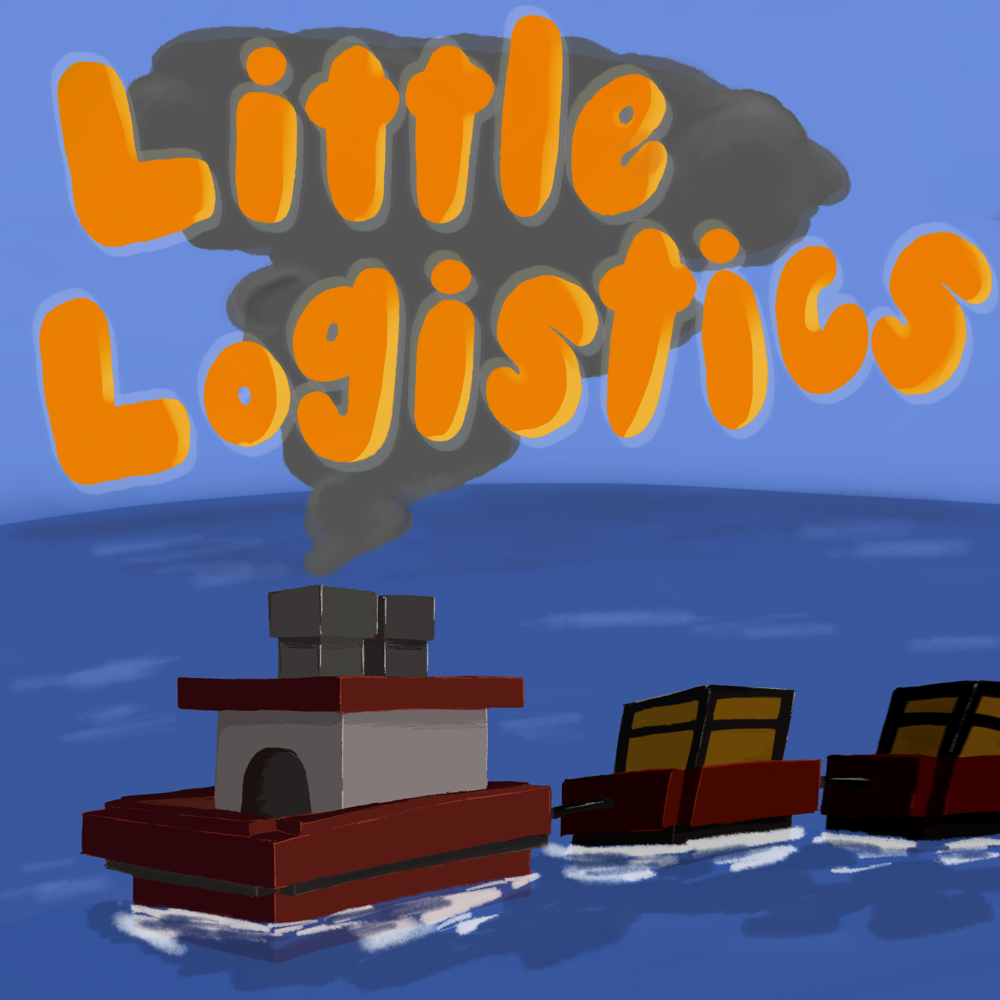

Minecraft 1.21
NeoForge vehicles, automatic routes, coloured docking stations, and item, fluid, and energy transfer.
Read the current guideA Minecraft mod that adds tugboats, barges, locomotives, and train cars for transporting players, items, fluids, and energy over water and rail.

Steam vehicles burn ordinary furnace fuel, while energy vehicles use NeoForge Energy. Cargo vehicles can carry items and fluids, transport passengers, fish, and collect loose items.
Routes and docking stations allow vehicles to operate automatically and connect to item, fluid, and energy systems.


NeoForge vehicles, automatic routes, coloured docking stations, and item, fluid, and energy transfer.
Read the current guideThe original guide for old docks, guide rails, vehicle chains, specialised hoppers, and legacy routing.
Read the legacy guide